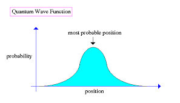
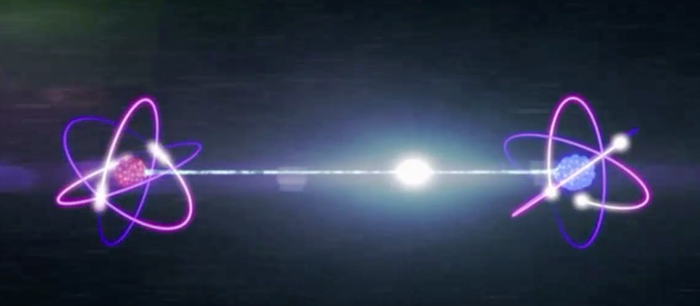

Superposition and Quantum Entanglement - The Basics
Do you ever wish that you can be in multiple places at once? For example, your friends are going to a movie, but your cousins are going to an arcade; do you not wish that you can be in both places at the same time? Well, unless you are a particle as small as the electron, you will be disappointed.
Superposition
As we know, quantum particles are defined by wave functions, meaning that unless we look at them, their location can only be predicted by a probability wave. Any quantum particle, let's say, an electron, can exist on any point in the probability wave, although the probability of different places vary themselves. Therefore, the electron is said to be at all the places at once, and it has to pick one of these spots when we look at the electron. This is superposition, saying that a quantum particle can exist in more places than one. A classic thought experiment, called Schrödinger’s cat experiment, is an extremely helpful analogy. Imagine you put a cat in a box, with a radioactive substance and a Geiger counter to see when the radioactive substance decays and kills the cat. Since radioactivity is a random process, it might or might not decay. Therefore, we don’t know if the cat is dead or alive inside the sealed box until we check the Geiger counter or we look inside the box. For this time where we don’t know the cat’s state of existence, it is said to be both dead and alive, hence being in a superposition.
Clarification
A quantum particle, like I said in the previous paragraph, can exist in more states than one, but that is not true. That is just something we say because it is hard for us to comprehend the states in which the particle is in. Take a balloon, for example. Let’s say it is red, in color. Now, take another balloon, which is blue in color. If these balloons were at a quantum level, there would be possibilities of balloons existing of blue and red colors. Now, take a hypothetical machine that separates the balloons depending on their colors, and this machine never fails. If we pass this third balloon through it, it is still either going to choose red or blue, but this would be based on probability. This means that this balloon isn’t switching from multiple states to having one state; it just always had a single state, but it is switching to a new state based on the probability,
Quantum Entanglement
Quantum entanglement, in the simplest words, is two quantum particles being defined by a single wave function. The reason that is weird is because anyone would expect one particle to be defined by only one wave function. For example, if there is an electron, I would only expect it to be defined by only one probability wave - its position, quantum spin, etc. should be defined by only one wave function. However, quantum entanglement allows two particles to be defined by one probability wave, meaning that BOTH the particles’ quantum spin (I am using quantum spin as an example, but it can be any quantum number) will be defined by one wave function.
Let’s say that a particle, with a spin of 0, decays into two other particles. Since the quantum spin is a conserved quantity, the two daughter particles’ spins should add up to 0. Therefore, they would have to have opposite spins. No matter where they are, no matter how far apart they are, as long as they aren’t influenced by any external force, their spin will always be opposite. When we decide to measure the spin of one particle in the vertical direction, the probability of an upward spin and a downward spin is 50% each. Let’s say that we measure the spin of the particle, and we get an upward spin. What this means is that for the other particle, it will be a downward spin 100% of the time. On face value, this may seem understandable. But let’s see what this means. This means that no matter how far away the particles are, the quantum information is traveling at a speed faster than light - and that is not supposed to be possible. The speed of light is 3.0 * 108 m per second, and if we put the particles more than ___ meters away, and measure the spin of the other particle less than a second later, the result would still be 100% downwards. This shows that there is something (aka quantum information) that can travel faster than the speed of light. This is why this theory confuses all physicists, even Einstein, who specifically called this “spooky action at a distance.”
Image Credits: Abyss - UOregon, UMass Blogs
References
- “Quantum Entanglement: Spooky Action at a Distance.” Youtube, uploaded by Fermilab, 13 February 2020, https://m.youtube.com/watch?v=JFozGfxmi8A.
- “Quantum Entanglement: Explained in REALLY SIMPLE Words.” Youtube, uploaded by ScienceABC, 14 October 2020, https://www.youtube.com/watch?v=fkAAbXPEAtU.
- Sutter, Paul. “What is quantum entanglement?” LiveScience, 26 May 2021, https://www.livescience.com/what-is-quantum-entanglement.html.
- “Superposition: The Musical | Breakthrough Junior Challenge 2020.” Youtube, uploaded by Kavya Bhat, 25 June 2020, https://www.youtube.com/watch?v=Y49K7ZvCLvk.
- “Quantum Superposition, Explained Without Woo Woo.” Youtube, uploaded by The Science Asylum, 29 November 2021, https://www.youtube.com/watch?v=ZUipVyVOm-Y.